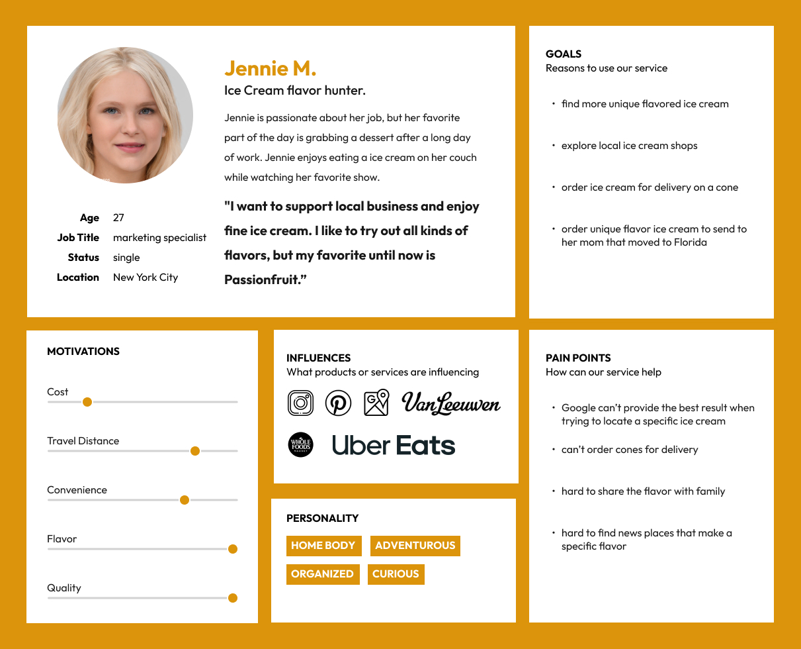
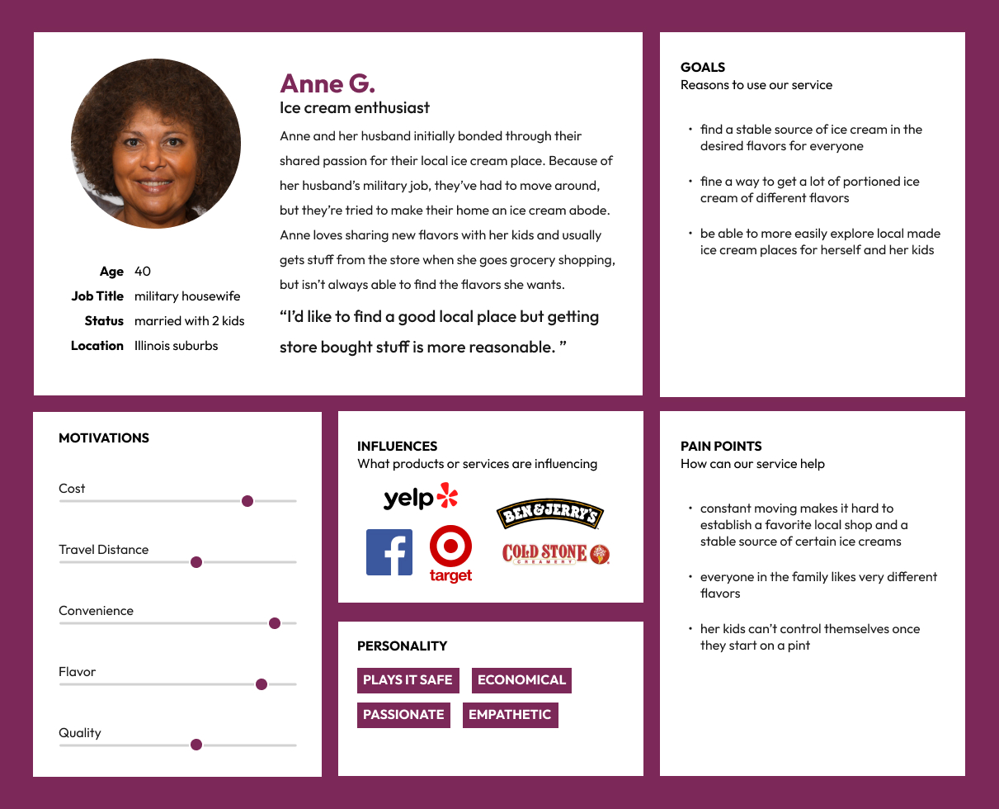
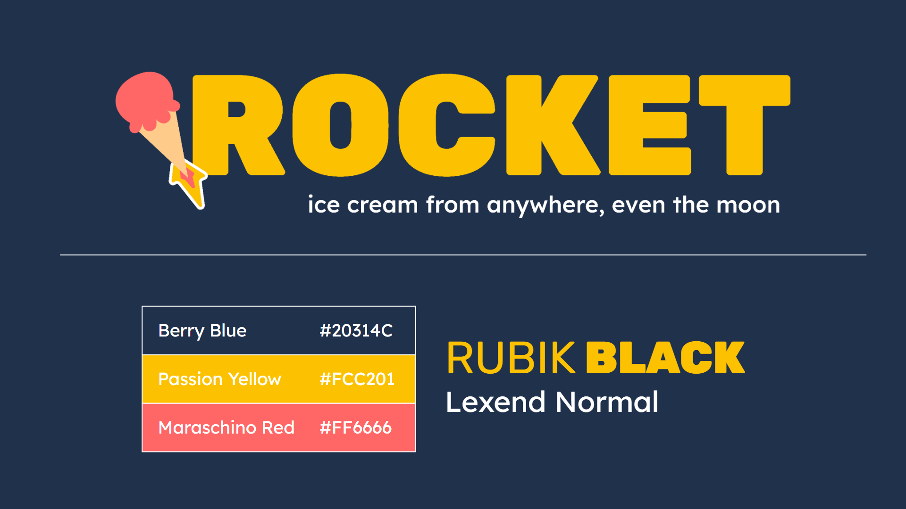
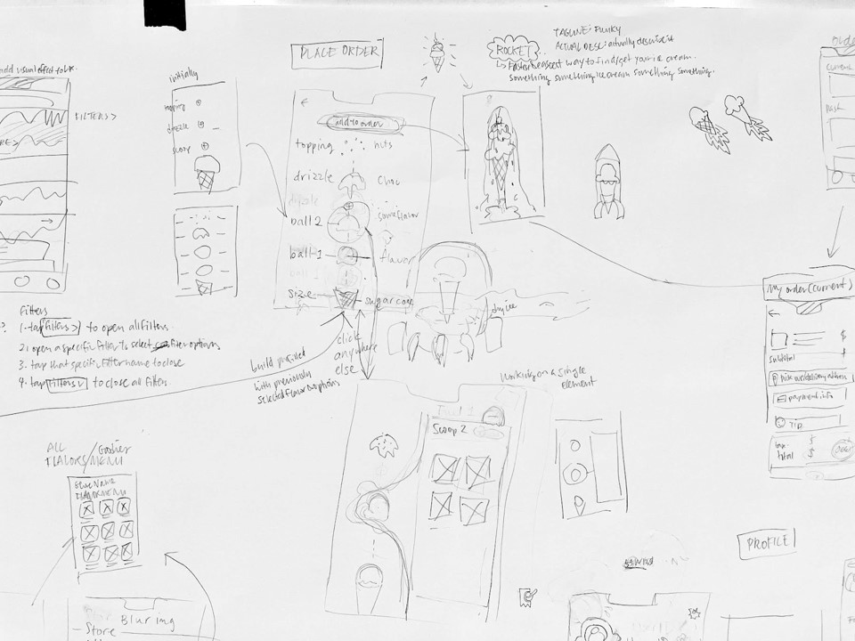

◈Watch the trailer video on Google Drive
Rocket, is an UI/UX project, which is a build-your-own ice cream sundae app. I collaborated with my friend Hyacinth Weng on this project.
We have this video illustrating our main user flow as we wanted more complex motions and interactions that Figma did not allow for.
Competitive Analysis
We researched many possible competitors in many fields that our app could relate to, including some searching platforms like google map and yelp. We also researched local delivery platforms like UberEats, GrubHub, and DoorDash. We also researched a national delivery platform called GoldBelly. We also looked into specific ice cream shops and brands. Some that have actual stores and delivery via those local delivery platforms, for example, Cold Stone and Baskin-Robbins. Some that have actual shops, and deliver via local platforms, while also selling in pints in grocery stores, like Ben & Jerry's and Häagen-Dazs. There are also some brands like Talenti that is only available in grocery stores. There are also some shops that can deliver nationally, for example OddFellows, and there is another service called the Ice Cream shop that fulfills orders of certain brands through local delivery platforms.
However, there really isn't any thing that is super similar to our product, which allows you to search for ice cream base on flavor and directly place the order for pick up or even national delivery in the app.
Survey and Interview
In our surveys and interviews, we collected answers from more than 30 people to really understand what kinds of problems people were having with the ice cream ordering process.
Because of our own background and experience, most people that provided answers are in their 20s, and 46% are in NYC. Among all these people, 18% of them eat ice cream around once a week, 53% eat less than once a week, and 6% eat very often. However, more than 80% of people don’t go to ice cream shops often and instead buy pints from grocery stores. Ordering ice cream for delivery is also not common, only 25% of people surveyed do so, and none of them order for nationwide delivery.In asking about people’s preference on flavor vs brand, 50% of people value both, but if they have to choose, 75% care more about flavor.Yet, 50% of people have problems finding a specific flavor.
The major takeaway from the surveys and interviews was that a lot of people have difficulty finding and getting the specific flavors they like. This is also a problem we ourselves have experienced, never really knowing the range of flavors that could be possible because of the limitations of our location.
About Rocket
Based on this problem we identified and our own similar experiences, we ended up expanding on the prompt to provide a real solution. Looking back at our competitive analysis we found that there was an area of opportunity. No current product was really searching for ice cream by flavor.
We wanted to make an app that allows you to find, build, and get any ice cream by flavor, from anywhere in the country.
Target Audience, User Personas, and Problem Statement
With the information we collected, we decided to set our target users as all ice cream lovers, especially those that want to try all kinds of flavors. We understood that enjoying ice cream is not limited by age, so we created two personas to represent that.
Our primary persona, Jennie, is a young lady living in NYC. She is adventurous, wants to try all kinds of ice cream.

Our secondary persona, Anne, is a 40 years old military housewife taking care of two kids. Since they move around a lot, it’s hard to find and keep an accessible favorite ice cream place.

With our personas and basic concepts, we came up with this problem statement.
"Jennie, the ice cream flavor hunter, needs a way to effectively and conveniently find new ice cream shops with unique flavors, because she values the quality that comes with locally made ice creams and hopes her mom in a different state will get to try it as well."
Goals and Design Principles
To solve the problem of our users, we set the goals of our app needs extensive inventory of flavors and shops, useful and effective search methods for locating specific ice cream flavors, and convenient delivery locally and nationwide.
With those goals in mind, we want the design to have robust organization, and it needs to be easy to use, while creating a fun and engaging experience, also visually standout.
Branding
The name of our app is Rocket, with the log line of “ice cream from anywhere, even the moon”. We came up with it when we were doodling while sketching the building user flow.

We wanted to evoke a sense of no limits, speed, and reliability. And it provided a unique visual for motion and our logo.
We wanted bright and playful but not overpowering colors with the yellow and red and picked a blue as a contrast and ground for everything. For typography, we picked Rubik Black as our display font for something strong and solid but still approachable and comfortable and Lexend as the body text for something a bit playful but still regular.
User Test
Since we wanted this app to have motion play a big part. We decided to directly go into Figma and do the Gray box for user testing.
We set up specific tasks for the users to complete to test the flow.
- You are looking to get something sweet and sour.
- You are allergic to tree nuts, gluten and are lactose intolerant.
- You realized that you want passion fruit flavor.
- Now you want to order it.
- You want a sugar cone and add a drizzle to it.
- Then your kid says he want a simple chocolate ice cream in a cup.
- You will go pick up the order.
◈Try this User Flow
We didn’t get a chance to do that many user tests, but we got some interesting and valuable feedback.
In general, most people found the filtering and searching steps confusing, but we think it could be because of how we designed the user flows and steps to take for the test. Most people will go to the search bar more naturally. However, all of our testers enjoyed the building part and found it effective and fun.
We got some diverse opinions on the map functions. Some people found it very important, but some people think they won’t use it.
And some people find some visuals distracting and unnecessary for getting the user to place the order, so we believe that we need to think more into the core of our app. We need to find the balance between it being a playful and visually appealing app and the business part of getting users to place orders or decide on if we are going to value one more than the other.
Also the word choice for the build part causes confusion. Putting the word order and send order many times makes the user upset on if the order is placed or not.
More Screens of the App
Future Steps
For the future, we will need to refine our app, and push further with branding, even expand to other treats, for example bubble tea and allow users to filter by categories of tea or available toppings.
Full Documentation
Please visit our Notion Page for the full documentation and access all other artifacts we have.
Here you can see our full Figma prototype file.